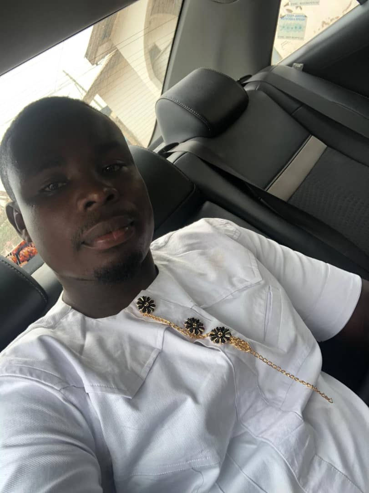
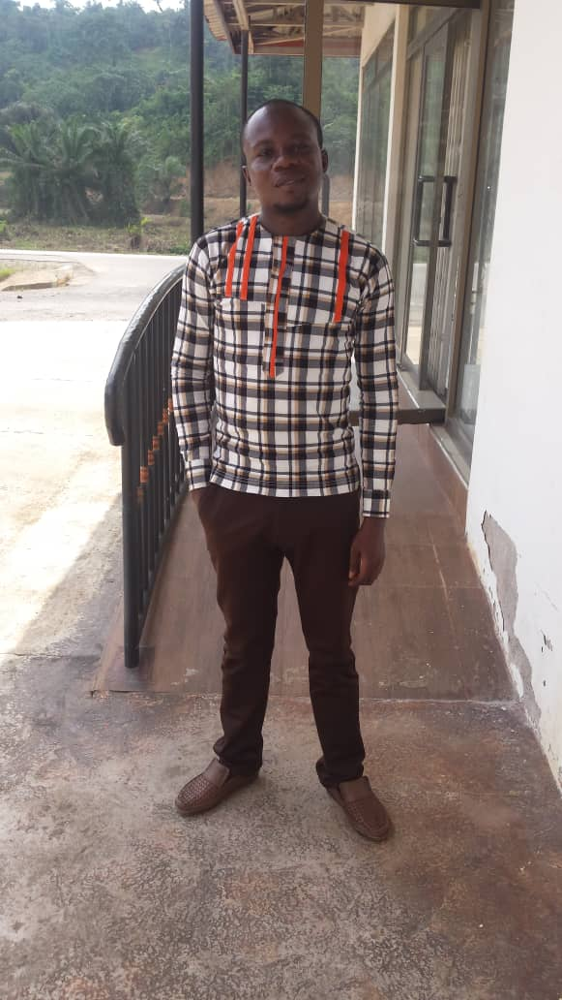
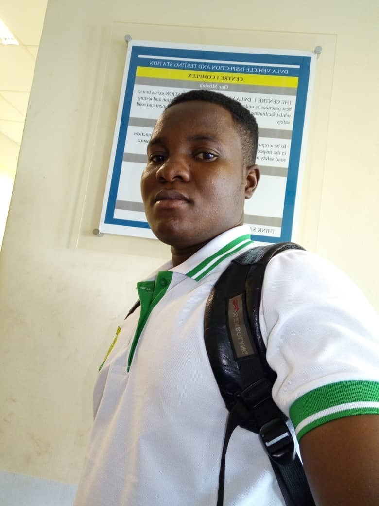
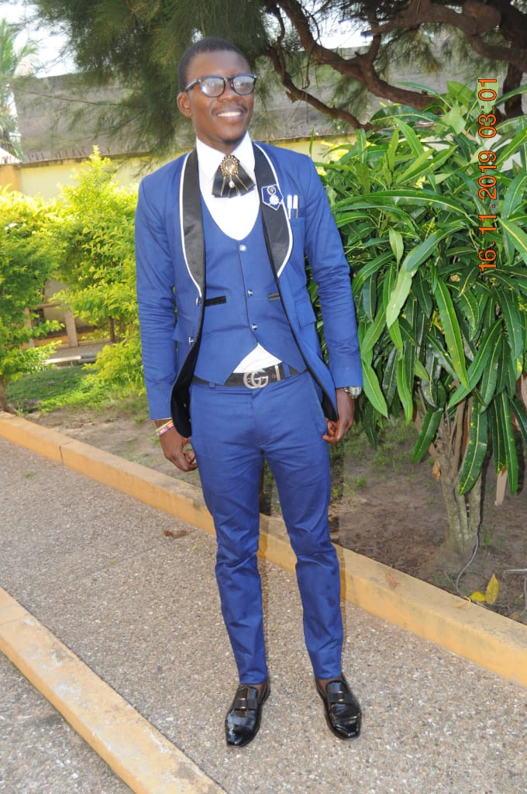
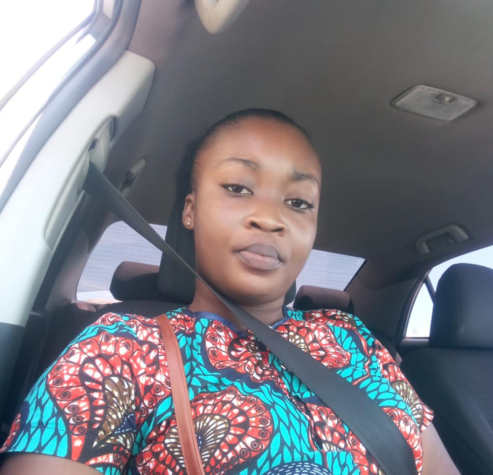
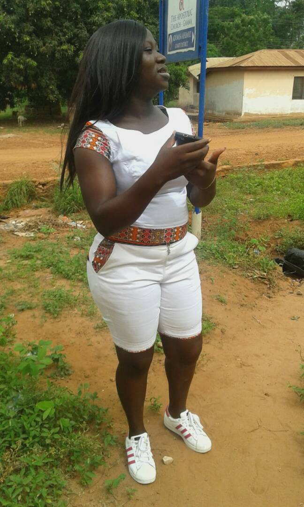
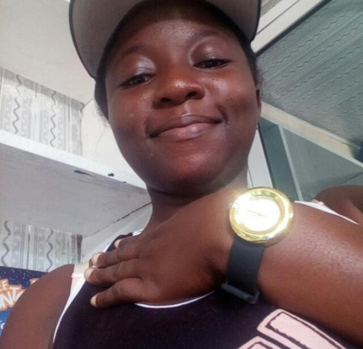
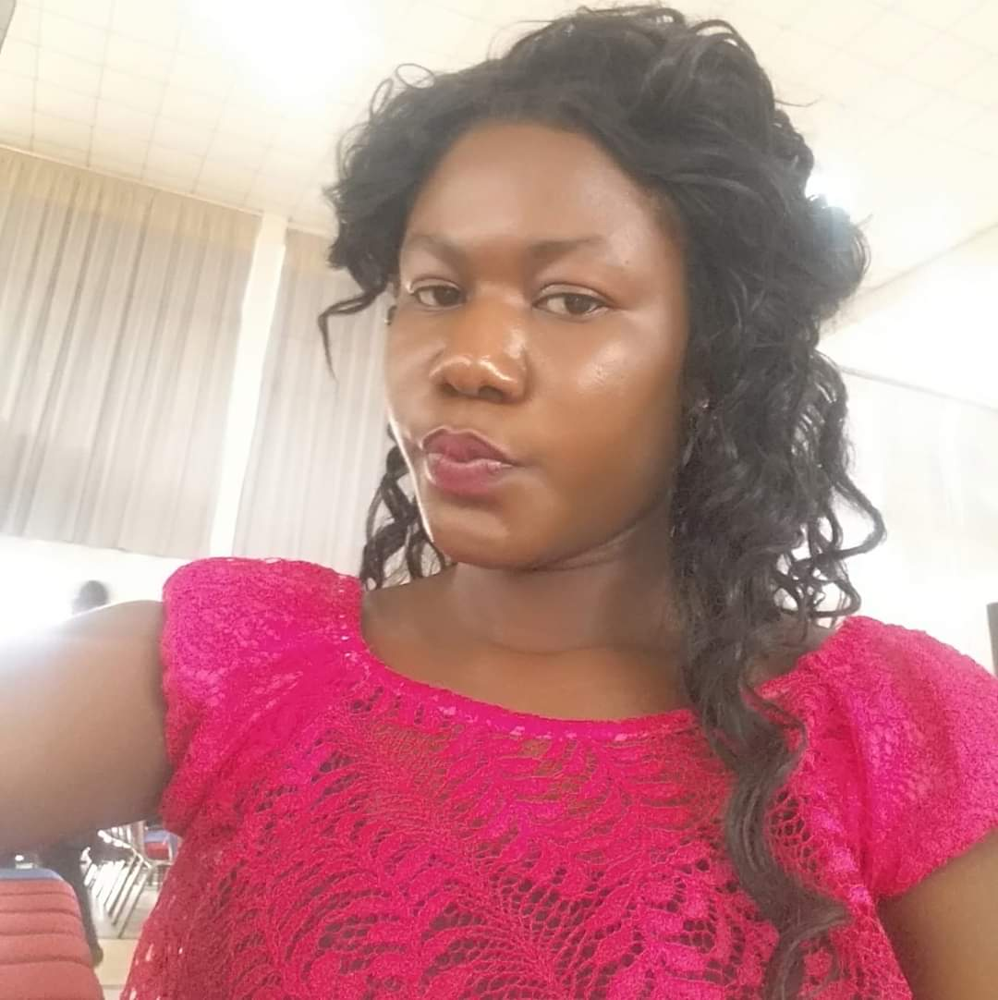
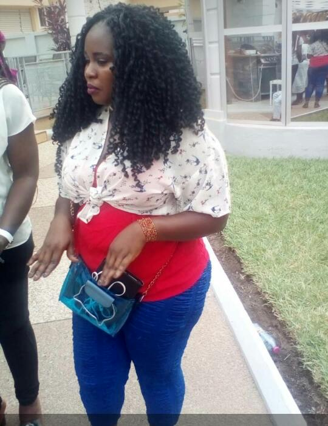

This was association form by the student who completed 07/08
1. Ababio Daniel
2. Tetteh Enoch
3. Atipo Tetteh
4. Nyardro John
5. Morris Asiedu George
6. Antwi Ernest
6. Seth Agyekum
7. Adeti Noah
8. Martin Portorohy
9. Kwabena Tetteh
Kulodzi Raymond
11. Adom Grace Dankwa
12. Helina Nartey Asiedu Adams
13. Adobea Gloria
14. Asor Beatrice

15. Agbevem Edith
16. Carterine
17 Sarbah Vida
18. Fatima Abu Bakr
19. Narteh Rebecca
20. Torkar Juliana
21. Yaw Teye
1. Mr. Harry Aguzey
2. Mr. Munyo Hope
3. Mad. Rhoda
4. Mad. Patricia
5. Sir Daniel a.k.a Prof Dan
6. Mr. Mensah
7. Mr. Sledge. a.k.a SOKODI
8. MR. Abrokwa
Mr. Harry Aguzey
Contact 024485853
Come from Ghana but now lives in China
Mr. Mr Munyo Hope
Contact 024
Teaching at Adjena/Adumasa-Gh